A Million Cars Come Home
A Smart-Charging Story
The PhD research of Pingfan Hu: three studies on electric vehicles, the grid, and the open-source tools built along the way.
当一百万辆车同时回家
一个关于智能充电的故事
胡平凡 (Pingfan Hu) 的博士研究：电动车、电网，和一路做出来的开源工具。
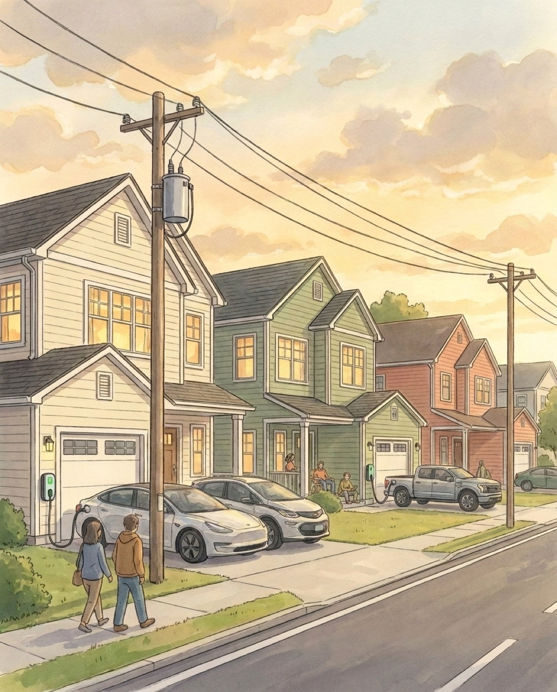
This is Pingfan.
Pingfan spent his PhD on battery electric vehicles, and on one deceptively simple question about them: when will they charge, and what does that timing mean for the electricity grid?
Answering it took three connected studies: one about people, one about the grid and its economics, and one about the research tools themselves.
The dissertation that resulted is long and full of equations. Most people will never read it. This book tells the same story in plain language.
这是胡平凡 (Pingfan Hu)。
读博这几年，平凡一直在研究纯电动汽车 (Battery Electric Vehicle, BEV)。核心问题看起来很简单：这些车会在什么时候充电？充电的时间点，又会给电网带来什么？
为了回答这个问题，平凡做了三项环环相扣的研究：第一项关于人，第二项关于电网和经济账，第三项关于做研究用的工具本身。
写成的博士论文很厚，公式很多，大多数人不会去读。所以他做了这本小书，把同样的研究用大白话再讲一遍。
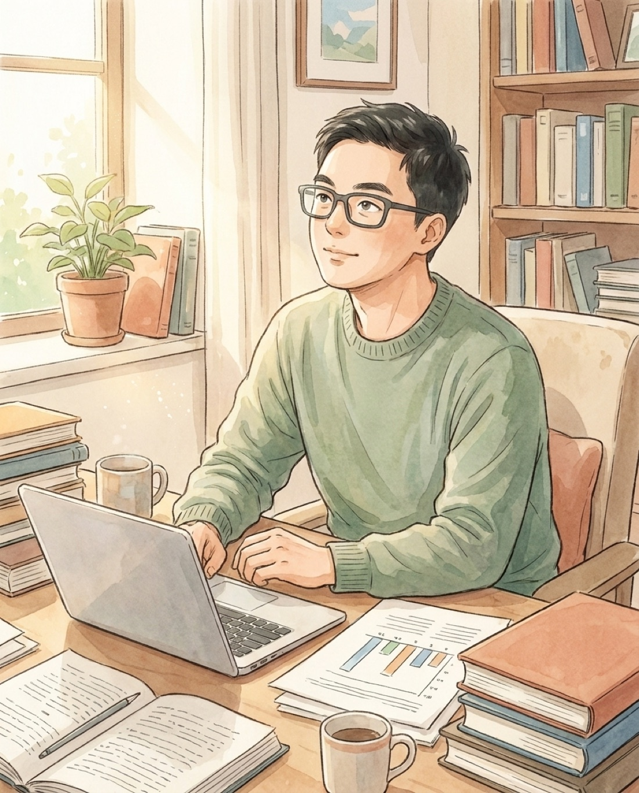
Pingfan had not planned to pursue a PhD.
Then Professor John Paul “JP” Helveston reached out to him directly. JP had funding from the Alfred P. Sloan Foundation to study smart charging for battery electric vehicles, and Pingfan's background in engineering and data science looked like a match. The direction was unusual: students normally seek out advisors, not the other way around.
Their first conversation ran three hours, far longer than either had planned. By the end, the outline of a research agenda had taken shape: whether BEV owners would accept managed charging, what their participation would be worth to the grid, and what tools the research itself would require.
Those three questions became the dissertation.
平凡本来没打算读博士。
有一天，John Paul “JP” Helveston 教授主动发来邮件。他刚拿到斯隆基金会 (Alfred P. Sloan Foundation) 的项目，研究电动车的智能充电，觉得平凡的工程和数据科学背景很合适。这事不太常见：一般是学生四处联系导师，很少有导师反过来找学生。
两人第一次见面，原定聊一个小时，结果聊了三个小时，谁都没想到。聊完，一份研究计划的雏形已经出来了：车主愿不愿意把充电交给别人管？他们的参与对电网值多少钱？做这些研究，又需要什么工具？
这三个问题，后来就成了这篇博士论文。
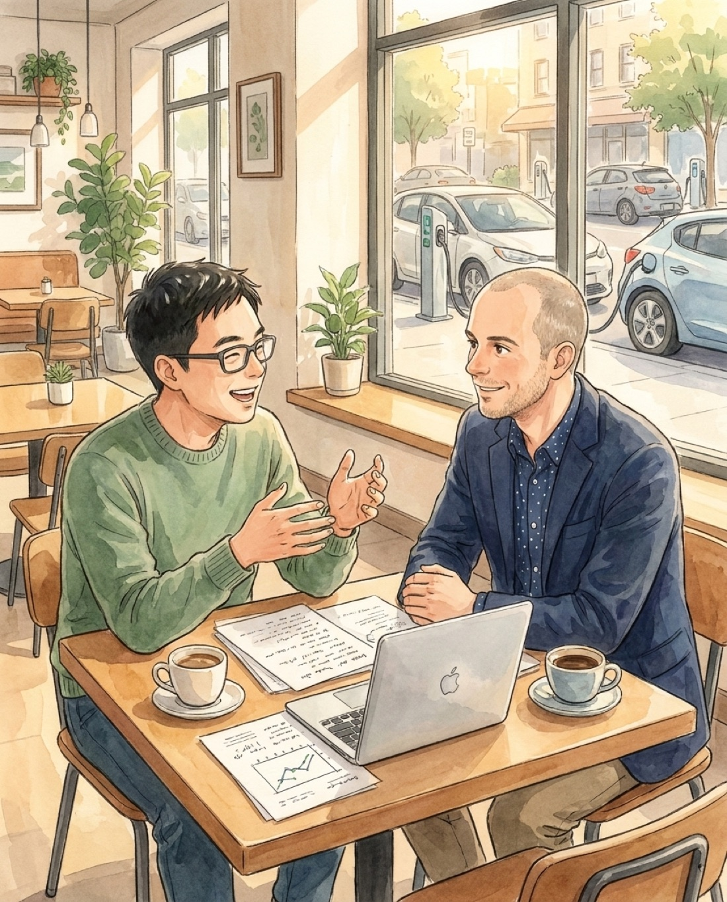
The core problem is one of timing.
Battery electric vehicles cut transportation emissions, but their benefit depends on when they charge. Most owners plug in when they arrive home, so unmanaged charging stacks directly onto the evening peak, when household demand is already highest. Serving that combined peak means running the most expensive generators and, eventually, building capacity that sits idle the rest of the day.
Smart charging is the alternative: coordinate charging so it moves into the overnight hours, when demand is low.
Whether it can work turns on three questions. Will owners participate, and on what terms? How much peak reduction does it buy, and at what cost? And what research infrastructure does it take to find out?
问题的关键，在于什么时候充。
电动车能减少交通排放，但好处大不大，要看充电的时机。多数车主傍晚到家就插枪，充电负荷不偏不倚，正好压在晚高峰上，那正是家家户户用电最多的时候。要扛住这个叠加的高峰，电网得开动最贵的机组，长远还得扩建平时闲置的容量。
智能充电是另一条路：把充电挪到深夜。那时用电少，电网有的是余量。
行不行得通，要回答三个问题：车主愿意参加吗，开什么条件？参加了能削掉多少高峰，要花多少钱？还有，要弄清这些，得先有什么样的研究工具？
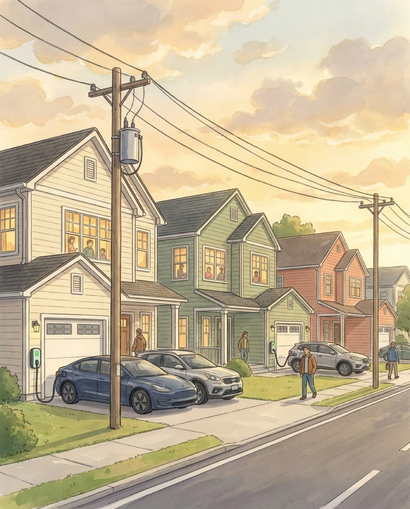
The first question, about participation, is where the dissertation begins.
Smart charging only works if vehicle owners agree to give up some control, so Study 1 examined the two program designs utilities actually offer. Under supplier-managed charging (SMC), the utility decides when charging happens but guarantees the vehicle reaches an agreed charge level by an agreed time. Under vehicle-to-grid (V2G), the vehicle also sends power back to the grid when needed, acting as distributed storage.
The two programs ask different things of an owner. SMC asks for patience with timing; V2G asks the battery to actively work for the grid, wear and all. There was good reason to expect owners to price those requests very differently.
论文从第一个问题讲起：人愿不愿意。
智能充电的前提，是车主肯交出一部分控制权。研究一考察了电力公司实际在推的两类项目。一类叫供电商托管充电 (Supplier-Managed Charging, SMC)：什么时候充，电力公司说了算，但保证到点有电。另一类叫车网互动 (Vehicle-to-Grid, V2G)：电网缺电时，车还得反过来送电回去，相当于一块会跑的储能电池。
两类项目对车主的要求不一样。SMC 只要你耐心等；V2G 却要动用你的电池，还得搭上电池损耗。可以想见，车主对这两件事的开价不会相同。
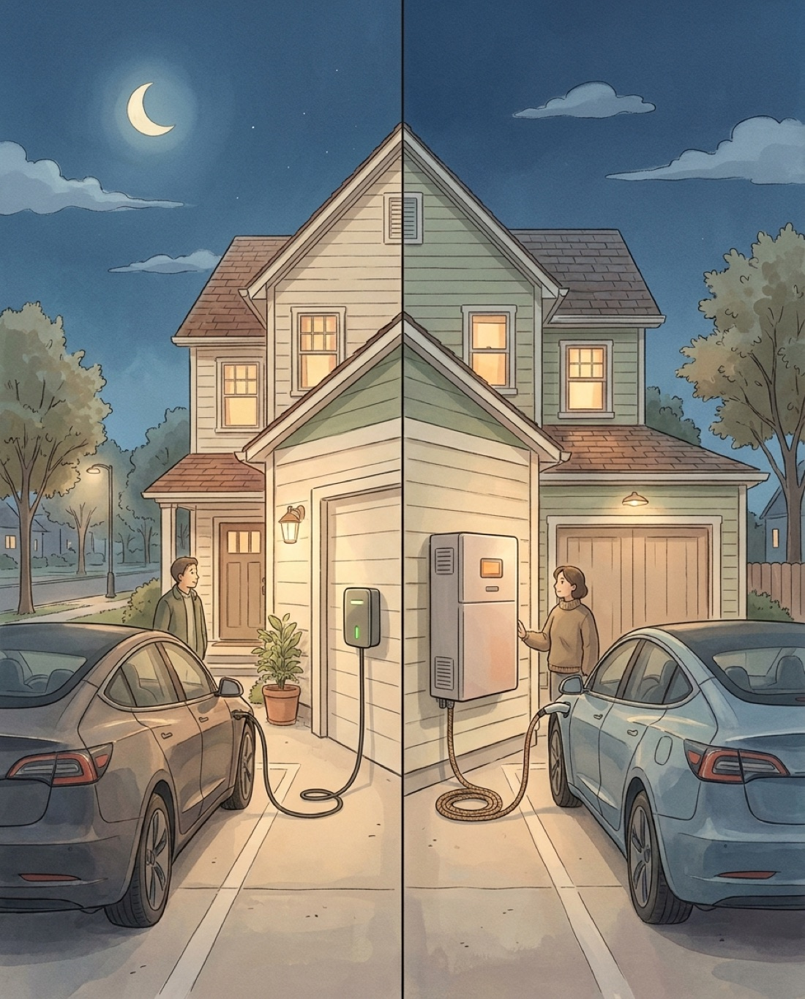
Whom you ask matters as much as what you ask.
Most earlier studies surveyed the general car-owning public, few of whom have ever charged an electric vehicle, let alone joined a smart charging program. Study 1 sampled differently: 1,356 current US BEV owners, recruited in 2024 through targeted social media ads and a market research panel.
A screening question did the quality control: respondents picked their vehicle from a list of 1,748 models spanning thirty years, of which only 77, or 4.4 percent, were battery electric. Without actually owning one, guessing right was unlikely.
These were people who knew exactly what charging involves; 682 of them completed the V2G questions as well.
问什么重要，问谁同样重要。
以往的研究大多去问普通车主，他们中很多人从没给电动车充过电，有些人就算想参加也没条件。研究一换了个思路：找来 1,356 位真正开电动车的美国车主，2024 年通过社交媒体定向广告和调查公司招募。
质量靠一道筛选题把关：受访者要在一张覆盖三十年、共 1,748 款车型的列表里选出自己的车，其中纯电车型只有 77 款，占 4.4%。不是真车主，基本蒙不对。
这些人才真正懂充电是怎么回事。其中 682 人还答完了 V2G 部分。
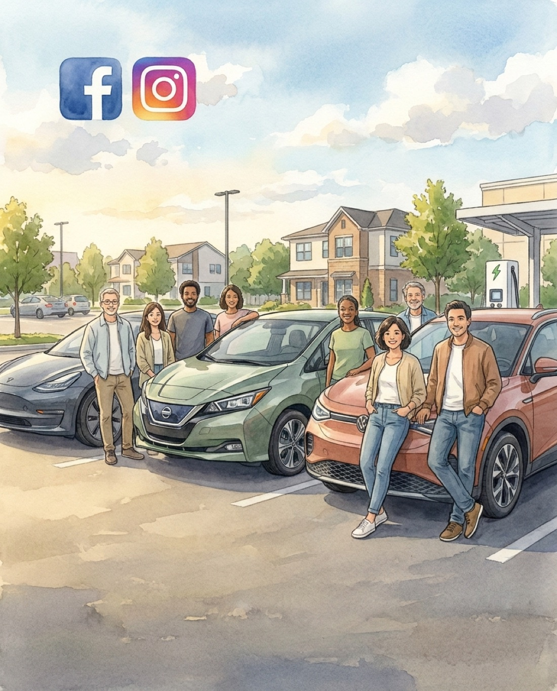
You cannot ask people directly how much they value flexibility; nobody carries such a number around.
Study 1 instead used a discrete choice experiment. Each respondent faced a series of paired program offers, each defined by concrete attributes: a one-time enrollment payment, a recurring monthly payment, the number of times per month the owner could override the program, and guaranteed battery charge thresholds. They chose one program, the other, or neither, six times for SMC and six more for V2G.
Choices like these, repeated across randomized attribute combinations, let a logit model estimate how strongly each attribute moves the decision to participate. Trade-offs reveal what direct questions cannot.
“灵活性对你值多少钱？”这种问题没法直接问，谁心里也没有这么个数。
研究一用的是离散选择实验 (discrete choice experiment)：给受访者看一对对虚拟方案，每个方案由几项具体条件组成，比如一次性奖励给多少、每月给多少钱、每月能手动豁免几次、电量保底是多少。受访者在方案 A、方案 B 和“都不要”之间选一个，SMC 选六轮，V2G 再选六轮。
让人在随机搭配的条件里一次次做选择，logit 模型就能算出，每项条件在多大程度上左右着人们的参与意愿。选择，比提问更诚实。
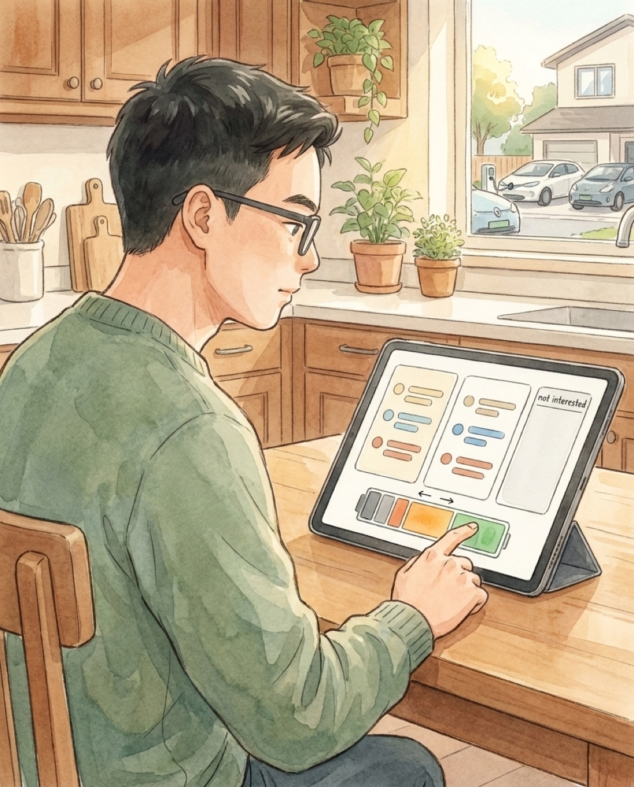
The work was collaborative from the start.
The smart charging studies brought together researchers from several universities: Alan Jenn at UC Davis; Brian Tarroja, Kate Forrest, and Matthew Dean at UC Irvine; and Eric Hittinger at the Rochester Institute of Technology, who later served on Pingfan's dissertation committee. JP, as advisor and principal investigator, kept the whole effort pointed in the right direction.
Pingfan led the day-to-day research, but the questions spanned vehicles, grids, and surveys, and no single person knows all three equally well. The team did.
这项工作从头到尾都是合作的产物。
团队来自好几所大学：加州大学戴维斯分校的 Alan Jenn，加州大学尔湾分校的 Brian Tarroja、Kate Forrest 和 Matthew Dean，还有罗切斯特理工学院的 Eric Hittinger，他后来也进了平凡的论文委员会。导师 JP 是项目负责人，始终替团队把着方向。
日常研究由平凡牵头，但这些问题横跨车、电网、调查方法三个领域，谁也不可能样样精通。好在，这个团队加起来可以。
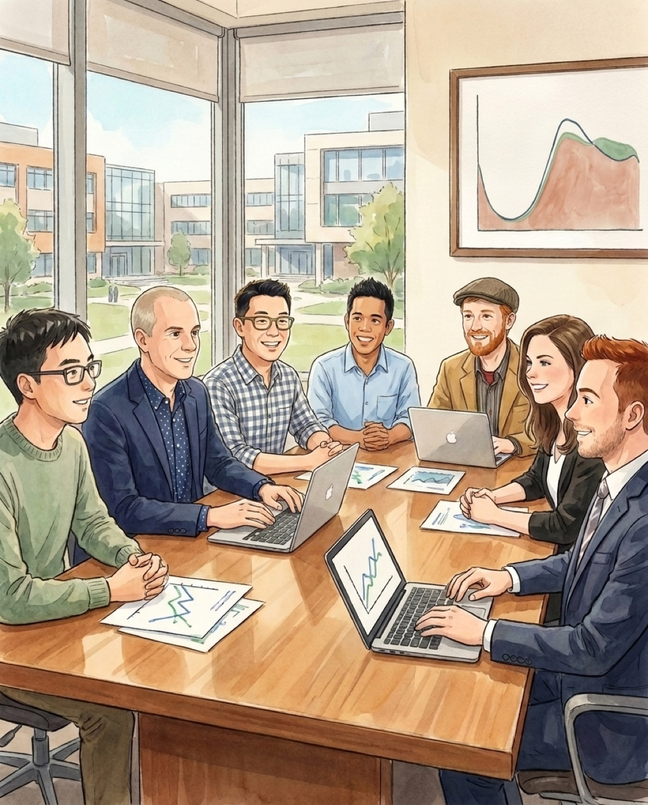
For supplier-managed charging, the results were encouraging, and a little surprising.
Owners cared less about money than expected, and more about operational flexibility: a guaranteed charge level by morning, and the ability to override when plans change. The guaranteed threshold mattered far more than the minimum: owners want range certainty, not control over the details.
Good flexibility with no payment reached at least 50 percent predicted enrollment. Recurring payments worked hardest: two to three dollars a month matched a one-time 65 dollars, roughly twenty to one.
People will share control of their charging. What they want in return is certainty that they will not be stranded.
先看托管充电，结果让人欣慰，也有点出乎意料。
车主没那么在乎钱，更在乎灵活性：早上电量有保底，临时有事的晚上能自己说了算。“保底电量”的影响远大于“起充电量”。说白了，大家要的是踏实的续航，过程怎么管，倒不太计较。
只给足灵活性、一分钱不掏，预测参与率就能到 50% 以上。再给点钱当然更好，而且按月给最划算：每月两三美元的效果，顶得上一次性给 65 美元，差不多二十比一。
充电可以交出去，但得保证别把人撂在半路。
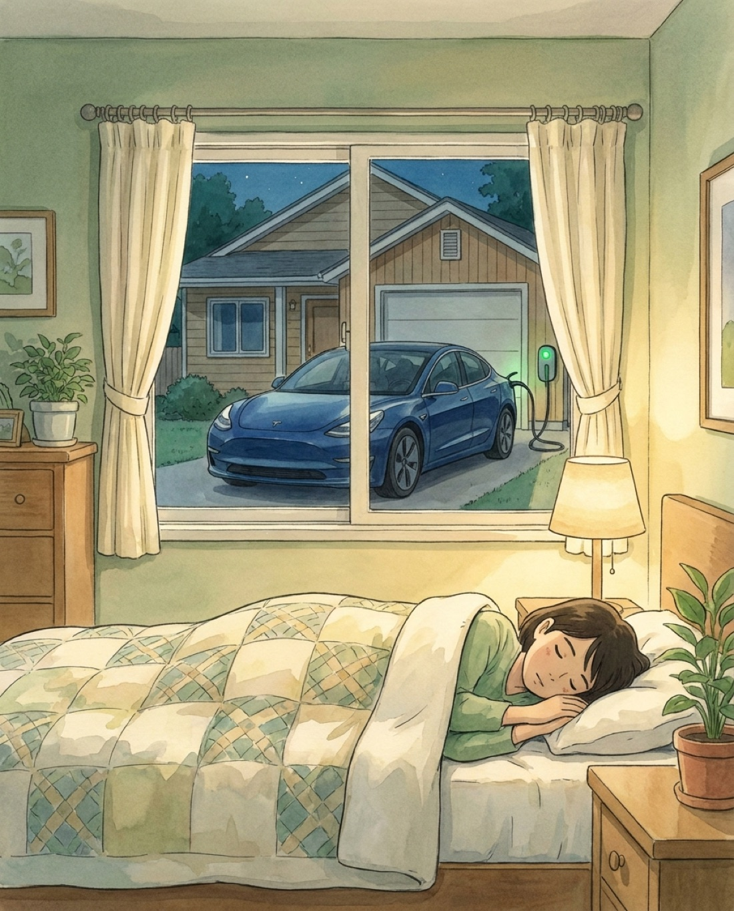
Vehicle-to-grid told a different story.
Sending power out of one's own battery is a larger request, and owners priced it accordingly: participation was far more sensitive to money than under SMC. Pay well per discharge event and enrollment climbs steeply; at 20 dollars per event, four events a month, the model predicts 82 percent enrollment.
The design implication is clean. SMC suits a simple subscription with modest recurring payments and strong guarantees; V2G is a market for discrete grid services, best paid per event.
The team also published an interactive enrollment simulator where utilities and policymakers can test a program and see its predicted participation.
车网互动是另一回事。
让电从自家电池往外流，这个请求大得多，车主的开价也直接：V2G 的参与意愿对钱远比 SMC 敏感。按次给钱、给得够多，参与率就一路上扬；每次放电给 20 美元、每月四次，模型预测能有 82% 的人参加。
对项目设计，这个启示很清楚：SMC 适合做成简单的包月订阅，给点小钱，把保障做足；V2G 更像按单结算的电网服务市场，按次付费最合适。
为了让结论用得上，团队还上线了一个参与率模拟器：一个网页小工具，电力公司和政策制定者随便调参数，马上能看到预测的参与率。
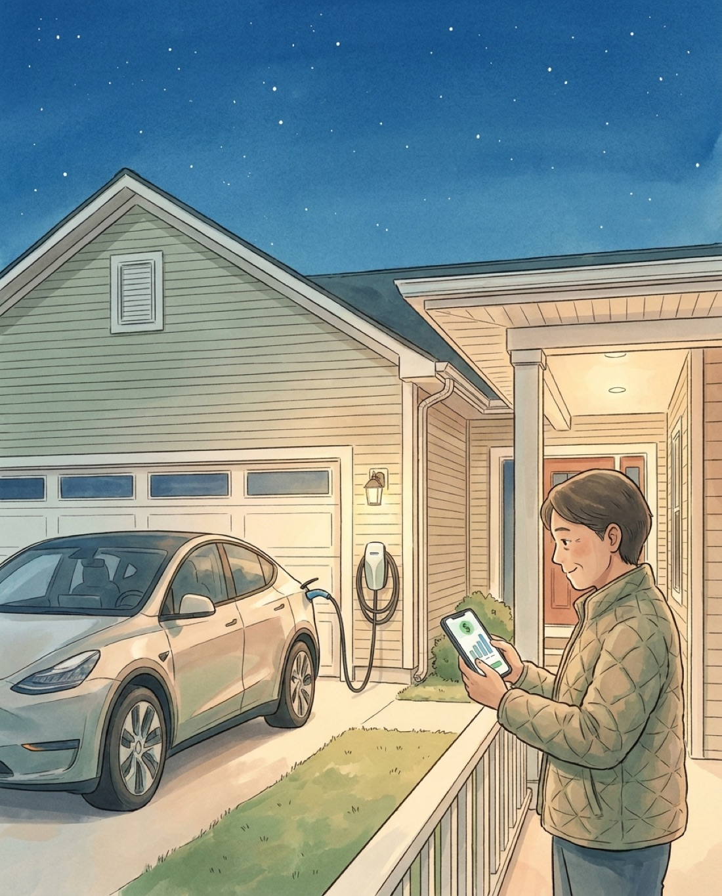
Stated willingness, however, is not yet grid value.
Study 1 established the terms on which owners would participate. Study 2 asked the two questions that determine whether a utility should act on those terms: how much does managed charging actually lower the evening peak, and does the arithmetic survive the cost of the incentives?
The economics were the heart of it. Every enrolled household must be paid, and the peak reduction has to be worth the total bill.
不过，嘴上说愿意，不等于电网真受益。
研究一搞清了车主参加的条件；研究二接着问两个问题，电力公司干不干，就看这两个答案：第一，托管充电到底能把晚高峰削下去多少？第二，扣掉发给车主的激励，这笔账还划算吗？
经济账是重头。参加的每一户都要给钱，削峰带来的好处，必须对得起这份总开销。
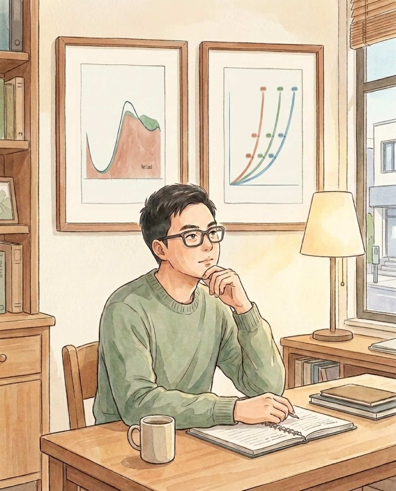
Study 2 connected the two halves empirically rather than by assumption.
The enrollment results from Study 1 became an enrollment curve: for any monthly incentive, the predicted share of owners who participate. That curve fed a year-long simulation of regional grids at 15-minute resolution, in which 10,000 vehicles following realistic travel patterns from the National Household Travel Survey drive, park, and charge, scaled up by Census household counts to full regional fleets.
Two regions anchored the comparison because their grids differ structurally: CAISO in California, solar-heavy with a deep overnight valley, and NYISO in New York, flatter, hydro-reliant, and winter-peaking.
研究二的做法，是用实打实的数据把两头接起来，而不是拍脑袋假设。
研究一的结果先整理成一条参与率曲线：月度激励给到多少，就有多大比例的车主参加。再把这条曲线接进一个覆盖全年、每 15 分钟一步的电网仿真：一万辆虚拟汽车按全国家庭出行调查 (NHTS) 的真实出行规律开车、停车、充电，再按人口普查的家庭数，放大成整个地区的车队。
比较选在两个脾气完全不同的电网上：加州的 CAISO，光伏多，后半夜低谷又深又稳；纽约的 NYISO，曲线平，靠水电，冬天负荷最高。
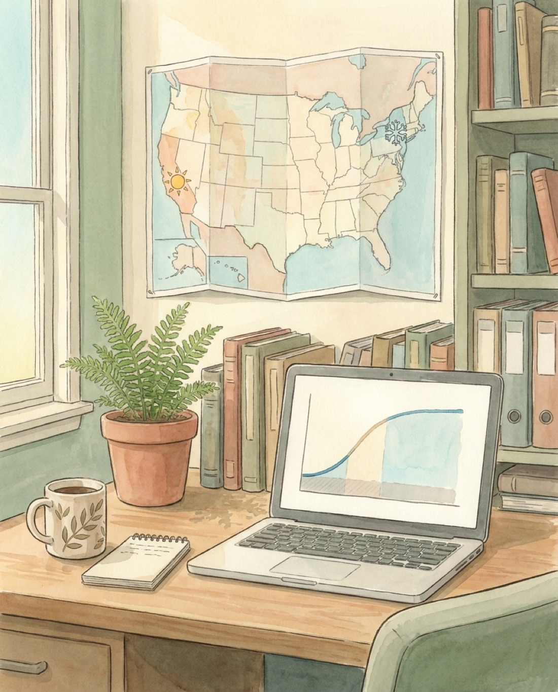
California's grid made the case vivid.
Its daily net load curve sags through the afternoon while solar generation carries the demand, then ramps steeply as the sun sets and households switch on. Engineers call it the duck curve, and the name is apt. The valley that follows the evening peak is deep and dependable, which is exactly the room that shifted charging needs.
The simulation moved charging out of the evening and into that valley. At full enrollment, CAISO's evening peak fell by 3.7 gigawatts, or 12.1 percent, on an annual-average day, and by up to 5.6 gigawatts on the most favorable day. NYISO, smaller and flatter, saw 1.6 gigawatts on the average day.
The physics works. The open question is the cost.
加州的电网把道理演得最清楚。
它的日净负荷 (net load) 曲线，午后被光伏压得一路下沉，太阳一落又猛地窜高。工程师管它叫鸭子曲线 (duck curve)，看一眼形状就知道为什么。晚高峰过后的低谷又深又稳，正好装得下挪过来的充电。
把充电从傍晚挪进低谷之后，参与率拉满时，CAISO 的晚高峰在普通日子平均削掉 3.7 吉瓦，合 12.1%；赶上最合适的一天，能削 5.6 吉瓦。盘子更小、曲线更平的 NYISO，平均削 1.6 吉瓦。
物理上没问题。剩下的是钱的问题。
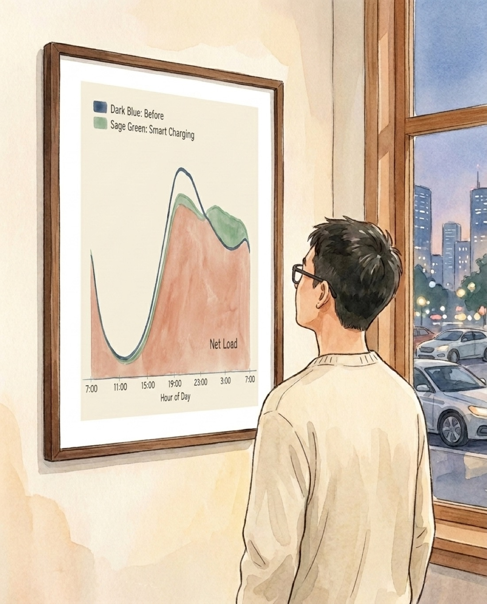
The cost side turns on one structural fact: every enrollee receives the same monthly incentive.
The enrollment curve is concave. About 30 percent of owners would participate with no payment at all; 20 dollars a month brings roughly 60 percent; reaching everyone requires about 85 dollars a month, paid to every household. Raising the incentive to attract the next participant means raising it for everyone already enrolled, so total program cost grows nonlinearly while the added peak reduction shrinks.
This is diminishing marginal returns, and in these programs it is sharp.
钱的麻烦，出在一个绕不开的事实上：激励是一口价，每户参与者拿的都一样。
参与率曲线是弯的：分文不给，也有大约 30% 的车主愿意参加；每月 20 美元，能拉到 60% 左右；可要让人人都参加，得每月掏 85 美元，而且每户都得给。想拉来下一位，就得给所有人一起涨价。于是总成本越滚越快，新增的削峰效果却越来越小。
经济学管这叫边际收益递减。在这类项目里，递减得格外狠。
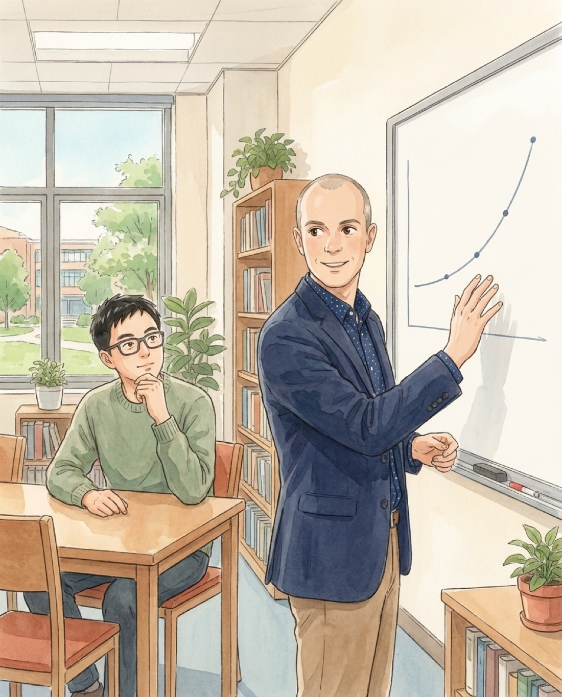
The practical answer is moderation.
Enrollment in the 30 to 50 percent range captured most of the achievable peak reduction at a small fraction of the cost of near-full participation. Beyond that range, each additional gigawatt of reduction becomes rapidly more expensive.
And past a threshold, more enrollment is not merely wasteful but counterproductive. On about 15 percent of CAISO days, concentrating too much charging in the overnight window reconstituted a new peak there. The mountain does not disappear; it moves.
Moderate, well-targeted enrollment is the cost-effective operating point. Maximum participation is not the goal.
所以，务实的答案是适可而止。
参与率落在 30% 到 50% 之间时，花小头的钱，就能拿到大头的削峰效果。再往上，每多削一吉瓦都贵得离谱。
更要命的是，过了某个坎，拉人越多反而越糟：太多充电挤进同一个深夜时段，低谷里反倒隆起一座新的高峰。在 CAISO，大约 15% 的日子会出现这种情况。山没被削平，只是搬了个家。
参与率适度、有的放矢，才是性价比最高的运行点。人越多越好，恰恰是误区。
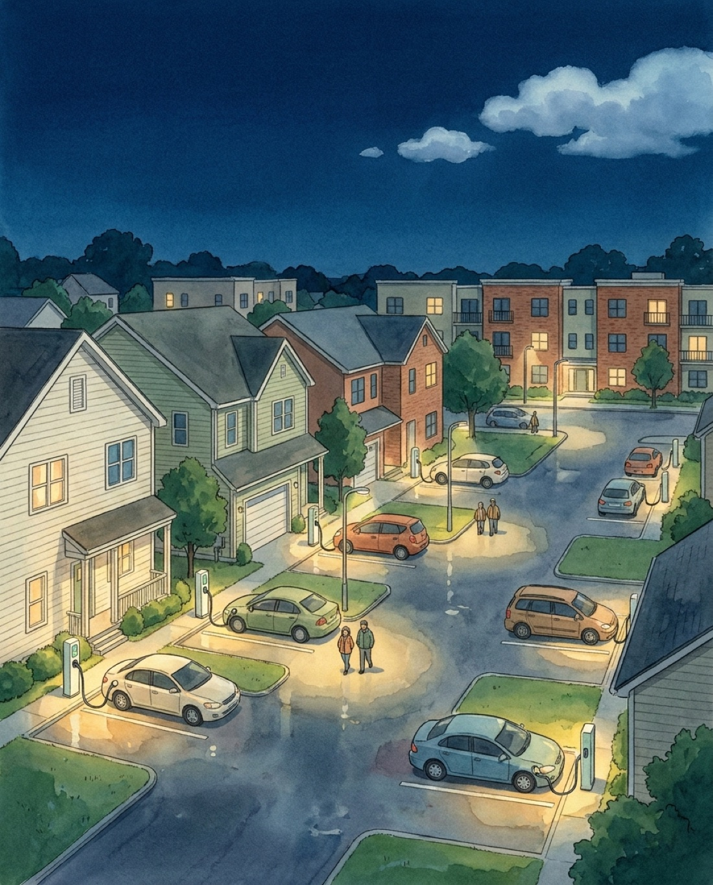
Region and season set the boundaries.
In CAISO, cost efficiency held essentially year-round, because solar keeps the gap between the evening peak and the overnight valley wide in every season. In NYISO, efficiency deteriorated in winter, when space heating keeps overnight demand elevated and compresses the very valley the program depends on.
The design lesson follows directly: a smart charging program is not one product to deploy uniformly, but a schedule to be tuned to each region's net load shape.
这笔账，还得看地方、看季节。
CAISO 的成本效益一年四季都稳，因为光伏让晚高峰和深夜低谷之间始终隔着足够大的落差。NYISO 一到冬天就吃力：取暖用电把后半夜撑得满满当当，项目赖以运转的低谷被压窄了。
教训很直接：智能充电不是一件到哪儿都能用的标准品，而是一张要按当地净负荷的形状来调的时刻表。
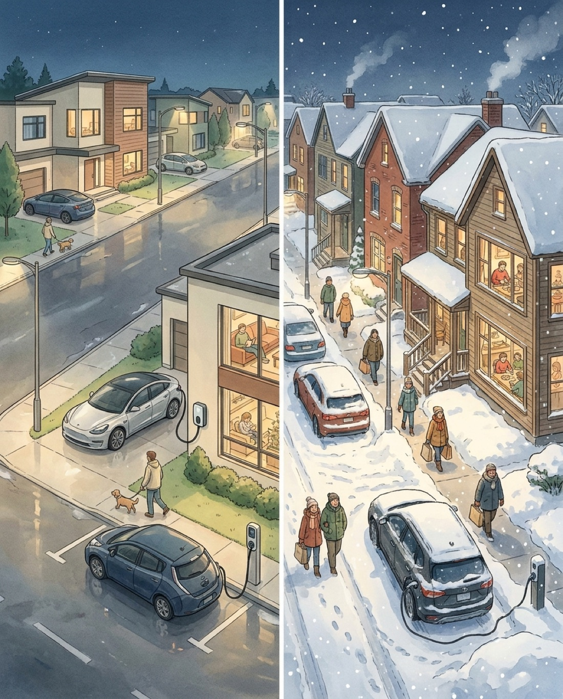
Study 3 began as friction inside Study 1.
Fielding a careful experiment on 1,356 people requires serious survey software, and the existing options each failed in a familiar way. Commercial platforms were capable but expensive and closed. Free tools were easy but limited. And almost none treated a survey as something a researcher could version, share, review, and reproduce exactly, years later, the way code and manuscripts are treated.
For reproducible research, that is not an inconvenience; it is a methodological gap. The team decided to close it themselves.
研究三的起因，是研究一里攒下的一肚子火。
要对 1,356 人做一场严谨的实验，先得有趁手的问卷软件。可市面上的选项个个差点意思：商业平台功能全，但又贵又封闭；免费工具上手快，但处处受限。更根本的是，几乎没有平台像对待代码和论文那样对待问卷：可以管版本、可以分享、可以审查、几年后还能一字不差地复现。
对讲究可复现的研究来说，这不是不方便，而是方法论上的一个窟窿。团队决定自己动手补上。
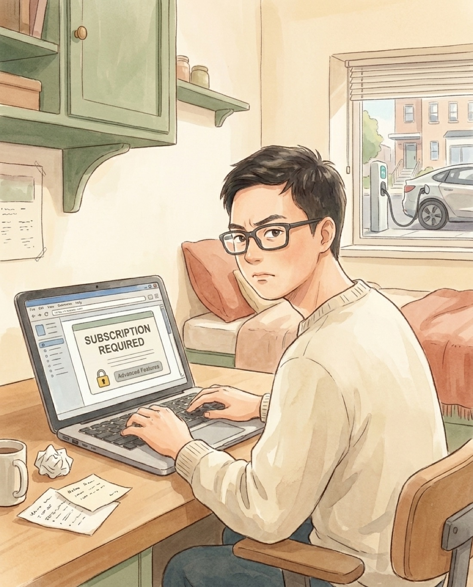
The result is surveydown, an open-source survey platform built in R.
Instead of assembling questions by clicking through a web interface, a researcher writes the survey as plain text, markdown with R code, and surveydown renders it as a live web survey. It stands on three mature open-source technologies: Quarto for the document, Shiny for the interactive application, and PostgreSQL for response storage.
Bogdan Bunea, an Engineering Management and Systems Engineering undergraduate in the lab, built the database layer that stores responses safely. The platform is free, open-source, and distributed on CRAN under an MIT license.
成果叫 surveydown，一个用 R 写的开源问卷平台。
用它做问卷，不用再在网页上点来点去，直接用纯文本写：markdown 加 R 代码，surveydown 负责把它变成能直接上线的网页问卷。背后是三件成熟的开源工具：Quarto 管文档，Shiny 管交互，PostgreSQL 管数据。
实验室里工程管理与系统工程系的本科生 Bogdan Bunea 搭起了安全存储答卷的数据库层。整个平台免费开源，以 MIT 许可证发布在 CRAN 上。
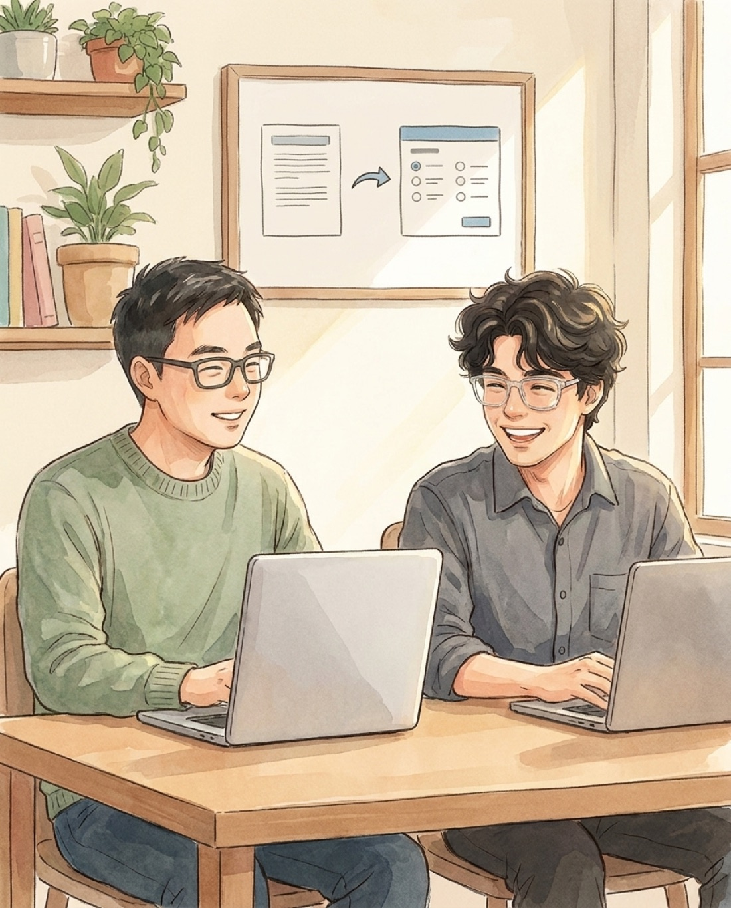
Plain text sounds like a modest design choice. It carries the platform's three main advantages.
First, reproducibility: a survey that lives in text files can be version-controlled, shared, audited, and re-run identically, which proprietary click-built surveys cannot.
Second, programmability: because real code executes while the survey runs, it supports conditional display, skip logic, randomization, and fully custom experimental designs, including the choice experiment in Study 1.
Third, data ownership: the survey application, its hosting, and its response database are deliberately separated, so researchers keep full control of their own data rather than renting access to it.
用纯文本写问卷，听着不起眼，平台的三大长处全靠它。
一是可复现 (reproducibility)：问卷就是几个文本文件，可以进版本库、可以共享、可以审查，几年后照样一字不差地跑起来。在专有平台上点出来的问卷，做不到。
二是可编程：问卷运行时跑的是真代码，想按条件显示、想跳题、想随机化、想做完全自定义的实验设计，都行。研究一的选择实验就是这么做出来的。
三是数据在自己手里：问卷程序、部署环境、答卷数据库三者分离，数据完全归研究者自己，不用向平台租回自己的数据。
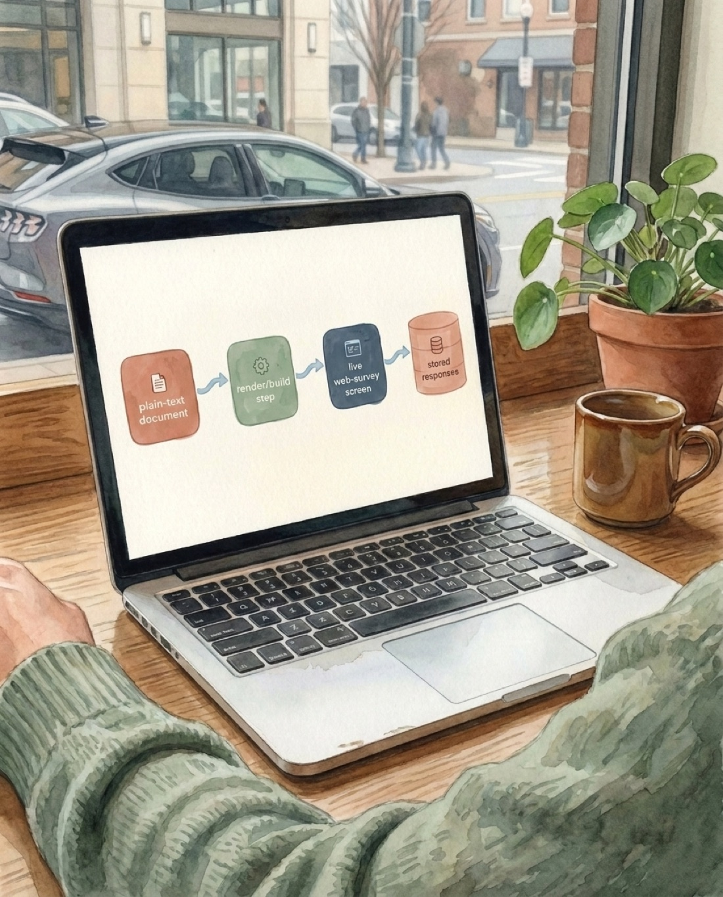
surveydown outgrew the lab that built it.
It has accumulated thousands of downloads on CRAN and is now used by researchers well beyond transportation: public health, economics, education, and policy among them. Community contributors have extended it, including translations into six languages, and a companion tool, sdstudio, is in development to add a graphical interface without giving up reproducibility.
What began as a workaround for one experiment has become shared research infrastructure.
surveydown 后来长到了实验室外面。
它在 CRAN 上被下载了数千次，用户早就不限于交通领域：公共卫生、经济学、教育学、公共政策，都有人在用。社区贡献者不断添砖加瓦，包括六种语言的翻译；配套的图形界面工具 sdstudio 也在开发中，目标是不牺牲可复现性，还能让不写代码的人用起来。
一个为了应急做出来的小工具，成了大家共用的研究基础设施。
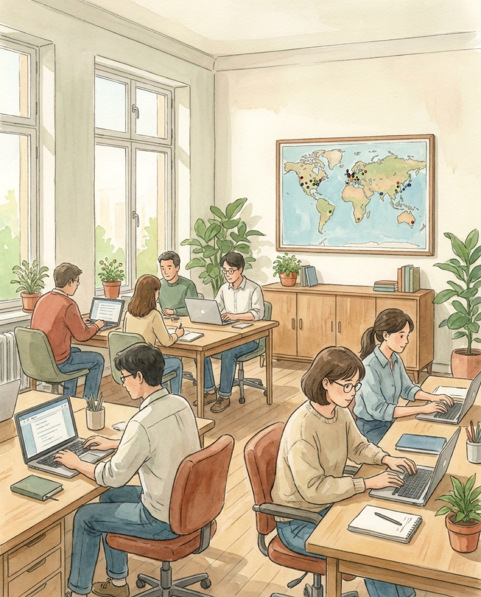
Read together, the three studies form one argument.
Study 1 measured, from 1,356 owners, the terms on which people will participate in managed charging. Study 2 carried those measured preferences into grid simulation and returned an operating rule: target moderate enrollment, tuned to the regional grid, because that is where the benefit is large and the cost is small. Study 3 built the open instrument that made the measurement possible, and left it to the field.
Consumer behavior, grid economics, and research infrastructure: each study answers the question the previous one exposed.
把三项研究摆在一起看，其实是一个完整的论证。
研究一从 1,356 位车主那里，量出了大家愿意参加托管充电的条件；研究二把这些条件带进电网仿真，得出一条很实际的准则：参与率要适度，方案要按当地电网来调，好处多、花钱少的区间就在那里；研究三把做这些测量要用的工具造了出来，开源留给了所有人。
消费者行为、电网经济、研究工具：每一项研究回答的，恰好是前一项留下的问题。
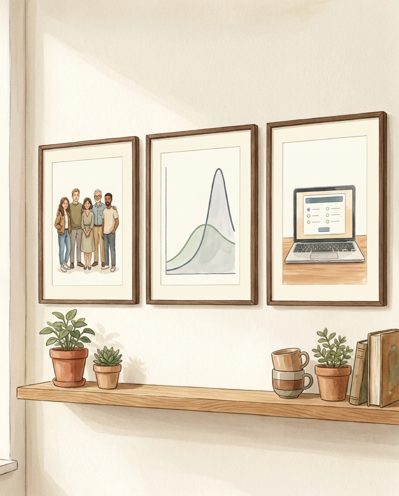
The dissertation also states plainly what it cannot yet claim.
Stated preferences overstate real behavior: deployed pilot programs today enroll only 4 to 10 percent of eligible owners, far below the modeled optimum, and closing that gap with revealed-preference data is the clearest next step. The simulations cover detached single-family homes with home charging; apartments, workplaces, and public charging remain open questions. V2G still needs the same cost-efficiency treatment SMC received. And sdstudio must mature before surveydown fully serves researchers who do not code.
Each of these is a research program of its own. That is how the work continues.
论文也把自己还说不准的地方，写得明明白白。
问卷里的表态往往比现实慷慨：已经落地的试点项目，参与率只有 4% 到 10%，离模型算出的最优区间还很远，用真实项目的数据来校准，是最清楚的下一步。仿真只覆盖了有车库的独栋住宅，公寓、办公楼和公共充电还没碰。V2G 也还欠一笔 SMC 已经算过的经济账。至于 sdstudio，得再打磨一阵，surveydown 才能真正服务不写代码的研究者。
这里的每一条，都够再做一个课题。研究就是这样接力下去的。
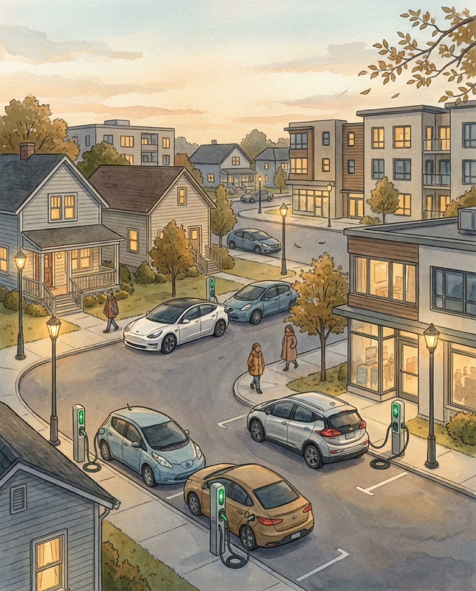
A PhD confers skills, and Pingfan leaves with a full set: choice modeling, grid simulation, data science in R, and the craft of building research software.
But the larger inheritance was a mindset, learned from JP across four years: take ownership of the work, never give up on a hard problem, and treat every project as part of a larger system, with origins and consequences beyond itself.
None of it was done alone. His committee and collaborators sharpened every study; the Helveston Lab made the years good ones; the Alfred P. Sloan Foundation funded the work and welcomed its unexpected software offshoot; and his parents, his friends, and above all his wife carried him through.
To all of them, thank you.
博士学位给人本事，平凡带走的是一整套：选择建模、电网仿真、R 语言数据科学，还有做研究软件的手艺。
但更大的收获是一种心态，四年里从 JP 身上学来的：对自己的工作负责到底；难题面前不轻易松手；看每个项目，都把它放回更大的系统里，看清它从哪儿来、到哪儿去。
这一切不是一个人做成的。委员会和合作者磨利了每一项研究；Helveston 实验室让这几年过得充实又开心；斯隆基金会资助了研究，还为意外长出来的软件成果喝彩；父母、朋友，尤其是妻子，一路把他撑到了今天。
谢谢你们，每一位。
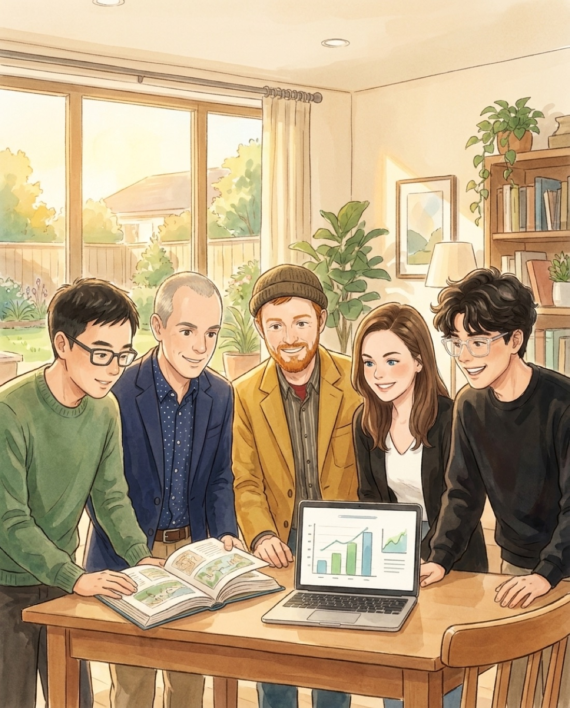
That is the story of a million cars coming home, and of what four years of research says about when they should charge.
The full dissertation is called:
Sustainable Transportation, Sustainable Research: Consumer Adoption and Grid Peak-Shaving of Battery Electric Vehicle Smart Charging, Inspiring the surveydown Open-Source Survey Platform
It contains the complete methods, models, and results, and you are warmly invited to read it.
Pingfan Hu, PhD
George Washington University, 2026
一百万辆车同时回家的故事，讲到这里。四年的研究，回答的其实就是一件事：它们该在什么时候充电。
论文全文题为：
Sustainable Transportation, Sustainable Research: Consumer Adoption and Grid Peak-Shaving of Battery Electric Vehicle Smart Charging, Inspiring the surveydown Open-Source Survey Platform
方法、模型和结果都在里面，欢迎你翻开读读。
胡平凡 (Pingfan Hu)，博士
乔治·华盛顿大学，2026
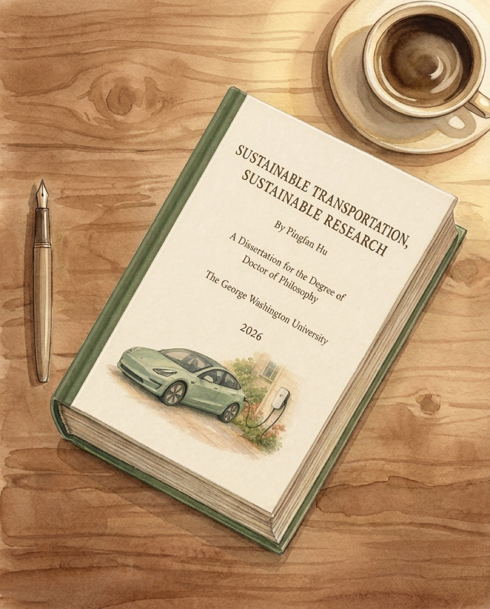